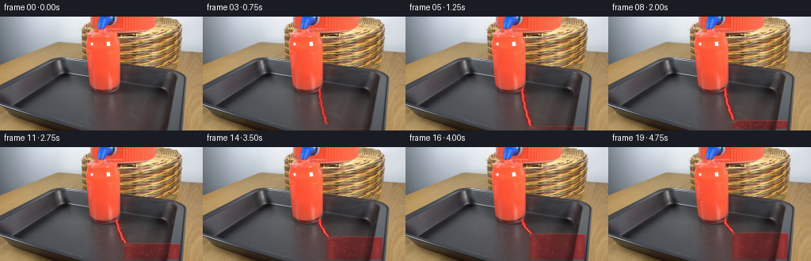

CODING AGENTS AS PIXEL WORLD MODELS
traex/DeepSeek-V4.1-Flash · 0090
点击播放 · 原生 RGB 像素
逐轮保存的候选
回放视频、检查图与代码变化。
每份候选均可单独播放。实际图片检查记录在下方工具轨迹中。
候选 01播放与检查图
点击播放 · 原生 RGB 像素

展开代码变化
--- 上一保存版本
+++ 本次保存版本
@@ -0,0 +1,234 @@
+from pathlib import Path
+
+import numpy as np
+from PIL import Image
+from scipy.ndimage import gaussian_filter
+
+import artifact_io
+
+
+ROOT = Path(__file__).resolve().parent
+FRAME_COUNT = 20
+HEIGHT, WIDTH = 144, 256
+
+
+def smoothstep(a, b, x):
+ u = np.clip((x - a) / (b - a), 0.0, 1.0)
+ return u * u * (3.0 - 2.0 * u)
+
+
+def build_glass_mask():
+ yy, xx = np.mgrid[:HEIGHT, :WIDTH]
+ # The tumbler's clear interior, inset from its two dark vertical walls.
+ left = 154.0 + 0.018 * (yy - 95.0)
+ right = 228.0 - 0.018 * (yy - 95.0)
+ inside = (
+ (yy >= 95.0)
+ & (yy <= 142.5)
+ & (xx >= left)
+ & (xx <= right)
+ )
+ edge = np.minimum(
+ np.minimum(xx - left, right - xx),
+ np.minimum(yy - 95.0, 142.5 - yy),
+ )
+ alpha = smoothstep(0.0, 2.2, edge)
+ return inside, alpha
+
+
+def stream_center(y, t, surface):
+ span = max(surface - 92.0, 1.0)
+ u = np.clip((y - 92.0) / span, 0.0, 1.0)
+ bend = 10.5 * u**1.55
+ wobble = 0.42 * np.sin(0.63 * y - 18.0 * t)
+ return 147.2 + bend + wobble
+
+
+def draw_stream(frame, t, surface, pour_strength):
+ if pour_strength <= 0.0:
+ return
+
+ yy, xx = np.mgrid[:HEIGHT, :WIDTH]
+ tip = 92.0 + (surface - 92.0) * smoothstep(0.02, 0.19, t)
+ active = (
+ (yy >= 91.0)
+ & (yy <= tip)
+ & (xx >= 140.0)
+ & (xx <= 166.0)
+ )
+ center = stream_center(yy.astype(float), t, max(tip, surface))
+ width = 1.55 + 0.32 * smoothstep(92.0, surface, yy)
+ distance = (xx - center) / width
+ core = np.exp(-1.45 * distance**2) * active * pour_strength
+ edge = np.exp(-0.34 * distance**2) * active * pour_strength
+
+ stream_color = np.zeros_like(frame, dtype=float)
+ stream_color[:] = (143.0, 13.0, 18.0)
+ stream_color[:, :, 0] += 108.0 * core
+ stream_color[:, :, 1] += 68.0 * core
+ stream_color[:, :, 2] += 49.0 * core
+
+ # A narrow specular thread makes the stream read as glossy liquid.
+ highlight = np.exp(-((xx - center + 0.72) / 0.55) ** 2)
+ highlight *= active * pour_strength * 0.52
+ stream_color[:, :, 0] += 55.0 * highlight
+ stream_color[:, :, 1] += 54.0 * highlight
+ stream_color[:, :, 2] += 42.0 * highlight
+
+ alpha = np.clip(0.95 * edge + 0.20 * core, 0.0, 0.96)
+ frame[:] = frame * (1.0 - alpha[:, :, None]) + stream_color * alpha[:, :, None]
+
+ # The outlet bead pulses slightly as liquid leaves the dispenser.
+ pulse = 1.0 + 0.08 * np.sin(11.0 * t)
+ bead = np.exp(-((xx - 147.2) ** 2 + (yy - 92.2) ** 2) / (3.3 * pulse))
+ bead *= pour_strength
+ bead_color = np.array((247.0, 59.0, 42.0))
+ frame[:] = frame * (1.0 - 0.65 * bead[:, :, None]) + bead_color * (
+ 0.65 * bead[:, :, None]
+ )
+
+
+def draw_liquid(frame, source, t, surface, inside, inside_alpha, pour_strength):
+ yy, xx = np.mgrid[:HEIGHT, :WIDTH]
+ center_x = 191.0
+ half_width = 36.0
+ nx = np.clip((xx - center_x) / half_width, -1.0, 1.0)
+
+ # Surface waves radiate from the impact point toward the far wall.
+ impact_x = stream_center(surface, t, surface)
+ ring_phase = 1.6 * np.sin(1.7 * (xx - impact_x) + 9.0 * t)
+ ring_decay = np.exp(-np.abs(xx - impact_x) / 24.0)
+ wave = ring_phase * ring_decay
+ surface_y = surface + 0.9 * nx**2 + wave
+
+ depth_alpha = smoothstep(-0.5, 1.8, yy - surface_y)
+ liquid_mask = inside & (yy >= surface_y)
+ alpha = inside_alpha * depth_alpha
+ alpha *= 0.90
+
+ source_f = source.astype(float)
+ lum = gaussian_filter(source_f.mean(axis=2), 0.75)
+ texture = np.clip((lum - 34.0) / 82.0, 0.0, 1.35)
+ depth = np.clip((yy - surface_y) / max(143.0 - surface, 8.0), 0.0, 1.0)
+
+ red = np.zeros_like(source_f)
+ red[:, :, 0] = 112.0 + 72.0 * texture - 19.0 * depth
+ red[:, :, 1] = 8.0 + 20.0 * texture - 5.0 * depth
+ red[:, :, 2] = 12.0 + 16.0 * texture - 4.0 * depth
+
+ # Warm internal highlights and darker sidewalls give the liquid volume.
+ vertical_light = np.exp(-((xx - 161.0) / 5.2) ** 2)
+ vertical_light += 0.62 * np.exp(-((xx - 220.0) / 3.8) ** 2)
+ vertical_light *= smoothstep(surface_y + 1.0, surface_y + 14.0, yy)
+ red[:, :, 0] += 48.0 * vertical_light
+ red[:, :, 1] += 22.0 * vertical_light
+ red[:, :, 2] += 15.0 * vertical_light
+
+ body_blend = np.clip(0.30 + 0.58 * texture, 0.0, 0.86)
+ body = source_f * (1.0 - body_blend[:, :, None]) + red * body_blend[:, :, None]
+
+ # Impact churn is brighter and slightly warmer than the bulk liquid.
+ impact = np.exp(
+ -((xx - impact_x) ** 2) / 15.0 - ((yy - surface_y) ** 2) / 12.0
+ )
+ body[:, :, 0] += 43.0 * impact * pour_strength
+ body[:, :, 1] += 25.0 * impact * pour_strength
+ body[:, :, 2] += 16.0 * impact * pour_strength
+
+ # A thin, bright meniscus catches the overhead light.
+ meniscus = np.exp(-((yy - surface_y - 0.35) / 0.78) ** 2)
+ meniscus *= liquid_mask * pour_strength
+ body[:, :, 0] += 78.0 * meniscus
+ body[:, :, 1] += 39.0 * meniscus
+ body[:, :, 2] += 24.0 * meniscus
+
+ # Deterministic small bubbles drift upward through the red body.
+ rng = np.random.default_rng(90)
+ bubble_layer = np.zeros((HEIGHT, WIDTH), dtype=float)
+ for _ in range(28):
+ bx = rng.uniform(160.0, 223.0)
+ phase = rng.uniform(0.0, 1.0)
+ speed = rng.uniform(2.0, 4.8)
+ radius = rng.uniform(0.45, 1.05)
+ bottom = 142.0 - phase * (142.0 - surface)
+ by = bottom - speed * t * 5.0
+ by = surface + 2.0 + np.mod(by - surface - 2.0, max(142.0 - surface - 2.0, 3.0))
+ bubble_layer += np.exp(-((xx - bx) ** 2 + (yy - by) ** 2) / radius**2)
+ bubble_layer = np.clip(bubble_layer, 0.0, 1.0) * liquid_mask
+ body[:, :, 0] += 27.0 * bubble_layer
+ body[:, :, 1] += 18.0 * bubble_layer
+ body[:, :, 2] += 14.0 * bubble_layer
+
+ alpha *= liquid_mask
+ frame[:] = frame * (1.0 - alpha[:, :, None]) + body * alpha[:, :, None]
+
+ # Expanding elliptical ripples, clipped to the liquid surface.
+ impact = stream_center(surface, t, surface)
+ for k in range(3):
+ radius = np.mod(2.0 + 4.6 * t + 3.8 * k, 13.0)
+ ellipse = np.sqrt(((xx - impact) / 2.1) ** 2 + ((yy - surface_y) / 0.62) ** 2)
+ ring = np.exp(-((ellipse - radius) / 0.72) ** 2)
+ ring *= (yy >= surface_y) * inside * pour_strength
+ ring *= 0.18 * (1.0 - radius / 15.0)
+ frame[:, :, 0] += 68.0 * ring
+ frame[:, :, 1] += 30.0 * ring
+ frame[:, :, 2] += 18.0 * ring
+
+
+def draw_droplets(frame, t, surface, pour_strength):
+ if pour_strength <= 0.0:
+ return
+ yy, xx = np.mgrid[:HEIGHT, :WIDTH]
+ for phase, side in ((0.12, -1.0), (0.55, 1.0), (0.81, -0.4)):
+ u = np.mod(t * 1.35 + phase, 1.0)
+ y = 94.0 + u * max(surface - 96.0, 1.0)
+ x = stream_center(y, t, surface) + side * (1.7 + 0.7 * np.sin(7.0 * u))
+ radius = 0.75 + 0.35 * np.sin(9.0 * u)
+ drop = np.exp(-((xx - x) ** 2 + (yy - y) ** 2) / radius**2)
+ drop *= pour_strength * (0.45 + 0.35 * np.sin(np.pi * u))
+ frame[:, :, 0] += 102.0 * drop
+ frame[:, :, 1] += 51.0 * drop
+ frame[:, :, 2] += 32.0 * drop
+
+
+def generate():
+ source = np.asarray(Image.open(ROOT / "first_frame.png").convert("RGB"))
+ if source.shape != (HEIGHT, WIDTH, 3):
+ raise ValueError(f"Unexpected first frame shape: {source.shape}")
+
+ inside, inside_alpha = build_glass_mask()
+ frames = np.empty((FRAME_COUNT, HEIGHT, WIDTH, 3), dtype=np.uint8)
+ frames[0] = source
+
+ for index in range(1, FRAME_COUNT):
+ t = index / (FRAME_COUNT - 1)
+ frame = source.astype(float).copy()
+
+ pour_strength = smoothstep(0.06, 0.20, t)
+ fill_progress = smoothstep(0.10, 0.94, t)
+ surface = 141.0 - 34.0 * fill_progress
+
+ draw_liquid(
+ frame,
+ source,
+ t,
+ surface,
+ inside,
+ inside_alpha,
+ pour_strength,
+ )
+ draw_stream(frame, t, surface, pour_strength)
+ draw_droplets(frame, t, surface, pour_strength)
+
+ # The original image has mild sensor grain; add a restrained temporal
+ # component only where liquid or the stream changed the frame.
+ changed = np.max(np.abs(frame - source), axis=2) > 1.0
+ noise = np.random.default_rng(1000 + index).normal(0.0, 0.55, (HEIGHT, WIDTH, 1))
+ frame[changed] += noise[changed]
+ frames[index] = np.clip(np.rint(frame), 0, 255).astype(np.uint8)
+
+ artifact_io.save(frames, ROOT)
+
+
+if __name__ == "__main__":
+ generate()
候选 02播放与检查图
点击播放 · 原生 RGB 像素

展开代码变化
--- 上一保存版本
+++ 本次保存版本
@@ -101,10 +101,10 @@
wave = ring_phase * ring_decay
surface_y = surface + 0.9 * nx**2 + wave
- depth_alpha = smoothstep(-0.5, 1.8, yy - surface_y)
+ depth_alpha = smoothstep(-1.3, 0.6, yy - surface_y)
liquid_mask = inside & (yy >= surface_y)
alpha = inside_alpha * depth_alpha
- alpha *= 0.90
+ alpha *= 0.94
source_f = source.astype(float)
lum = gaussian_filter(source_f.mean(axis=2), 0.75)
@@ -112,19 +112,19 @@
depth = np.clip((yy - surface_y) / max(143.0 - surface, 8.0), 0.0, 1.0)
red = np.zeros_like(source_f)
- red[:, :, 0] = 112.0 + 72.0 * texture - 19.0 * depth
- red[:, :, 1] = 8.0 + 20.0 * texture - 5.0 * depth
- red[:, :, 2] = 12.0 + 16.0 * texture - 4.0 * depth
+ red[:, :, 0] = 158.0 + 66.0 * texture - 25.0 * depth
+ red[:, :, 1] = 14.0 + 24.0 * texture - 7.0 * depth
+ red[:, :, 2] = 17.0 + 19.0 * texture - 5.0 * depth
# Warm internal highlights and darker sidewalls give the liquid volume.
vertical_light = np.exp(-((xx - 161.0) / 5.2) ** 2)
vertical_light += 0.62 * np.exp(-((xx - 220.0) / 3.8) ** 2)
vertical_light *= smoothstep(surface_y + 1.0, surface_y + 14.0, yy)
- red[:, :, 0] += 48.0 * vertical_light
- red[:, :, 1] += 22.0 * vertical_light
- red[:, :, 2] += 15.0 * vertical_light
-
- body_blend = np.clip(0.30 + 0.58 * texture, 0.0, 0.86)
+ red[:, :, 0] += 58.0 * vertical_light
+ red[:, :, 1] += 26.0 * vertical_light
+ red[:, :, 2] += 17.0 * vertical_light
+
+ body_blend = np.clip(0.42 + 0.52 * texture, 0.0, 0.92)
body = source_f * (1.0 - body_blend[:, :, None]) + red * body_blend[:, :, None]
# Impact churn is brighter and slightly warmer than the bulk liquid.
@@ -204,9 +204,9 @@
t = index / (FRAME_COUNT - 1)
frame = source.astype(float).copy()
- pour_strength = smoothstep(0.06, 0.20, t)
- fill_progress = smoothstep(0.10, 0.94, t)
- surface = 141.0 - 34.0 * fill_progress
+ pour_strength = smoothstep(0.10, 0.24, t)
+ fill_progress = smoothstep(0.15, 0.94, t)
+ surface = 140.5 - 33.5 * fill_progress
draw_liquid(
frame,
候选 03播放与检查图
可观测工具轨迹
实际执行的命令与返回图片。
命令 1exit 0
/bin/bash -c "pwd && rg --files -g '"'!*__pycache__*'"' -g '"'!*.pyc'"' | sort"
命令 2exit 0
/bin/bash -c 'cat prompt.txt'
命令 3exit 0
/bin/bash -c 'cat GENERATION_RULES.md'
命令 4exit 0
/bin/bash -c "find . -maxdepth 2 -type f -printf '%p %s bytes\\n' | sort"
命令 5exit 0
/bin/bash -c "sed -n '1,240p' artifact_io.py"
命令 6exit 0
/bin/bash -c "python - <<'PY'
from PIL import Image
import numpy as np
im=Image.open('first_frame.png').convert('RGB')
a=np.asarray(im)
print(im.size, a.dtype, a.min(), a.max())
print('mean', a.mean((0,1)))
# dominant colors after 16-level quantize
q=(a//16)*16+8
c,n=np.unique(q.reshape(-1,3),axis=0,return_counts=True)
for i in np.argsort(n)[-30:][::-1]: print(tuple(c[i]), int(n[i]))
PY"命令 7exit 0
/bin/bash -c "python - <<'PY'
try:
import cv2; print('cv2',cv2.__version__)
except Exception as e: print('no cv2',e)
try:
import scipy; print('scipy',scipy.__version__)
except Exception as e: print('no scipy',e)
PY"命令 8exit 0
/bin/bash -c "python - <<'PY'
from PIL import Image
import numpy as np, cv2
A=np.asarray(Image.open('first_frame.png').convert('RGB'))
r,g,b=[A[:,:,i].astype(float) for i in range(3)]
for name,m in [
('red1',(r>140)&(r>g*1.45)&(r>b*1.5)),
('red2',(r>180)&(r>g*1.8)&(r>b*1.9)),
('bright',(r>200)&(g<150)&(b<130)),
('glassblue',(b>130)&(b>r*1.03)&(g>r*1.02)),
('dark',(r+g+b<170)),
('light',(r+g+b>620)),
]:
m=m.astype(np.uint8)
n, lab, stats, cents=cv2.connectedComponentsWithStats(m,8)
print('\\n',name,'count',m.sum(),'components',n-1)
for i in np.argsort(stats[1:,4])[-15:][::-1]+1:
x,y,w,h,area=stats[i]; print(' ',(x,y,w,h,int(area)),'cent',tuple(np.round(cents[i],1)))
PY"命令 9exit 0
/bin/bash -c "python - <<'PY'
from PIL import Image
import numpy as np
im=Image.open('first_frame.png').convert('RGB')
# Nearest neighbour 4x and save in .tmp for local numeric pixel inspection
im.resize((1024,576), Image.Resampling.NEAREST).save('.tmp/first_frame_4x.png')
# create coordinate grid overlay every 16 px
from PIL import ImageDraw
ov=im.resize((1024,576), Image.Resampling.NEAREST)
d=ImageDraw.Draw(ov)
for x in range(0,256,16):
d.line((x*4,0,x*4,576), fill=(0,255,0), width=1)
d.text((x*4+2,2),str(x),fill=(0,255,0))
for y in range(0,144,16):
d.line((0,y*4,1024,y*4), fill=(0,255,0), width=1)
d.text((2,y*4+2),str(y),fill=(0,255,0))
ov.save('.tmp/first_frame_grid.png')
PY"命令 10exit 0
/bin/bash -c "python - <<'PY'
from PIL import Image
import numpy as np
A=np.asarray(Image.open('first_frame.png').convert('RGB'))
# Block 4x4 medians, classify using hue and brightness
for by in range(0,144,4):
s=''
for bx in range(0,256,4):
p=A[by:by+4,bx:bx+4].reshape(-1,3).mean(0)
r,g,b=p
mx=max(p); mn=min(p); d=mx-mn
if r>130 and r>g*1.45 and r>b*1.55: c='R'
elif mx>215 and d<35: c='W'
elif mx<65: c='#'
elif mx<105: c='d'
elif b>r*1.05 and b>g*.98: c='C'
elif r>b*1.25 and g>b*1.12 and r>g*1.04: c='T'
elif r>g*1.15 and r>b*1.2: c='r'
elif b>r*1.03: c='c'
elif mx>180: c='w'
else: c='.'
s+=c
print(f'{by:3d} '+s)
PY"命令 11exit 0
/bin/bash -c "python - <<'PY'
from PIL import Image
import numpy as np
A=np.asarray(Image.open('first_frame.png').convert('RGB')).astype(float)
# down 2 x 2 average, display color-coded char by nearest rough class
chars=' .:-=+*#%@'
for y in range(0,144,2):
s=''
for x in range(0,256,2):
p=A[y:y+2,x:x+2].mean((0,1)); r,g,b=p
if r>g*1.4 and r>b*1.5 and r>100: c='R'
elif b>r*1.08 and b>g*1.02: c='C'
elif r>g*1.08 and r>b*1.2: c='t'
else:
lum=p.mean(); c=chars[min(9,int(lum/256*10))]
s+=c
print(f'{y:3d} '+s)
PY"命令 12exit 0
/bin/bash -c "python - <<'PY'
from PIL import Image
import numpy as np
A=np.asarray(Image.open('first_frame.png').convert('RGB')).astype(int)
r,g,b=A[:,:,0],A[:,:,1],A[:,:,2]
M=(r>130)&(r>g*1.4)&(r>b*1.5)
for y in range(144):
xs=np.where(M[y])[0]
if len(xs):
# contiguous runs len>=2
runs=[]; st=pr=xs[0]
for x in xs[1:]:
if x>pr+1:
if pr-st+1>=2:runs.append((st,pr))
st=x
pr=x
if pr-st+1>=2:runs.append((st,pr))
if runs: print(y, runs)
PY"命令 13exit 0
/bin/bash -c "python - <<'PY'
from PIL import Image
import numpy as np, cv2
A=np.asarray(Image.open('first_frame.png').convert('RGB')).astype(float)
# horizontal gradient strength
lum=A.mean(2)
gx=np.abs(np.diff(lum,axis=1)); gy=np.abs(np.diff(lum,axis=0))
# print strong vertical lines x counts
print('vertical lines by x, edge count/mean')
for x in np.argsort((gx>12).sum(0))[-30:][::-1]: print(x, int((gx[:,x]>12).sum()), round(float(gx[:,x].mean()),2))
print('horizontal lines by y')
for y in np.argsort((gy>12).sum(1))[-30:][::-1]: print(y, int((gy[y]>12).sum()), round(float(gy[y].mean()),2))
PY"命令 14exit 0
/bin/bash -c "python - <<'PY'
from PIL import Image
import numpy as np
A=np.asarray(Image.open('first_frame.png').convert('RGB')).astype(int)
# print sampled colors at known points
for y in [20,30,40,50,60,70,80,90,95,100,110,120,130]:
print('y',y,[(x,tuple(A[y,x])) for x in [20,40,60,80,100,115,130,140,145,150,160,170,180,190,200,210,220,230,240]])
PY"命令 15exit 0
/bin/bash -c "python - <<'PY'
from PIL import Image
import numpy as np
A=np.asarray(Image.open('first_frame.png').convert('RGB'))
# Generate labeled 8x crops of regions for possible local image viewer? use ASCII is enough
# print rgb means in selected rectangles
for y0,y1 in [(55,65),(65,75),(75,85),(85,95),(95,105),(105,115),(115,125),(125,135),(135,143)]:
print('Y',y0,y1)
for x0,x1 in [(105,120),(120,130),(130,140),(140,150),(150,160),(160,170),(170,180),(180,190),(190,200),(200,210),(210,220),(220,230)]:
p=A[y0:y1,x0:x1].mean((0,1)).round().astype(int)
print(f'{x0}:{x1}',tuple(p),end='; ')
print()
PY"命令 16exit 0
/bin/bash -c "python - <<'PY'
from PIL import Image
import numpy as np
A=np.asarray(Image.open('first_frame.png').convert('RGB')).astype(float)
# edge magnitude, local contrast
lum=A.mean(2)
gx=np.zeros_like(lum); gy=np.zeros_like(lum)
gx[:,1:-1]=(lum[:,2:]-lum[:,:-2])/2
gy[1:-1]=(lum[2:]-lum[:-2])/2
g=np.hypot(gx,gy)
chars=' .:-=+*#%@'
for y in range(0,144,2):
s=''
for x in range(0,256,2):
v=g[y:y+2,x:x+2].max(); c=chars[min(9,int(v/45*10))]
s+=c
print(f'{y:3d} '+s)
PY"命令 17exit 0
/bin/bash -c "python - <<'PY'
from PIL import Image
import numpy as np
A=np.asarray(Image.open('first_frame.png').convert('RGB')).astype(float)
# Values around candidate glass: compare expected geometry: find strongest dark rectangular edges around x100..220 y60..140
for x in range(90,241,5):
col=A[55:144,x].mean(1)
print(x, round(float(col.mean()),1), round(float(col.min()),1), round(float(col.max()),1))
PY"命令 18exit 0
/bin/bash -c "python - <<'PY'
from PIL import Image
import numpy as np
A=np.asarray(Image.open('first_frame.png').convert('RGB')).astype(float)
# Column profiles in candidate area: dark region x150..220 y65..125 likely glass, x108..151 red dispenser
for y in range(50,144,5):
s=''
for x in range(90,241,3):
p=A[y:y+5,x:x+3].mean((0,1))
if p[0]>p[1]*1.5 and p[0]>p[2]*1.6 and p[0]>100:c='R'
elif p.mean()<55:c='#'
elif p.mean()<75:c='D'
elif p[2]>p[0]*1.06 and p[2]>p[1]*1.02:c='C'
elif p.mean()<100:c='d'
elif p[0]>p[1]*1.1 and p[0]>p[2]*1.15:c='T'
elif p.mean()>150:c='W'
else:c='.'
s+=c
print(f'{y:3d} '+s)
PY"命令 19exit 0
/bin/bash -c "python - <<'PY'
from PIL import Image
import numpy as np
A=np.asarray(Image.open('first_frame.png').convert('RGB')).astype(int)
# Extract horizontal run transitions at y values with raw rgb
for y in [60,64,68,72,76,80,84,88,92,96,100,104,108,112,116,120,124,128,132,136,140,143]:
print('\\nY',y)
# report 5 pixel means each x starting 100 to 230
for x in range(100,231,10): print(x, tuple(A[y,x]), end=' | ')
print()
PY"命令 20exit 0
/bin/bash -c "python - <<'PY'
from PIL import Image
import numpy as np
A=np.asarray(Image.open('first_frame.png').convert('RGB')).astype(float)
# Search red body contour: saturation and value profiles, output widths every y
r,g,b=A[:,:,0],A[:,:,1],A[:,:,2]
sat=(A.max(2)-A.min(2))/np.maximum(A.max(2),1)
red=(r>g*1.25)&(r>b*1.35)&(sat>.35)
for y in range(0,110,2):
xs=np.where(red[y])[0]
# runs >=3
runs=[]
if len(xs):
st=pr=xs[0]
for x in xs[1:]:
if x>pr+1:
if pr-st+1>=3:runs.append((st,pr))
st=x
pr=x
if pr-st+1>=3:runs.append((st,pr))
print(y,runs)
PY"命令 21exit 0
/bin/bash -c "python - <<'PY'
from PIL import Image
import numpy as np
A=np.asarray(Image.open('first_frame.png').convert('RGB')).astype(float)
# 1 char per 1 pixel region x100-240, y48-144 using hue class with colors mapped
for y in range(48,144):
s=''
for x in range(100,240):
p=A[y,x]; r,g,b=p; mx=p.max(); mn=p.min(); d=mx-mn
if r>160 and r>g*1.45 and r>b*1.5: c='R'
elif r>120 and r>g*1.25 and r>b*1.35: c='r'
elif b>r*1.10 and b>g*1.04: c='C'
elif r>g*1.12 and r>b*1.25 and mx>90: c='T'
elif mx>210 and d<35: c='W'
elif mx<40:c='@'
elif mx<55:c='#'
elif mx<70:c='8'
elif mx<85:c='%'
elif mx<100:c='d'
elif mx<125:c='.'
elif mx<160:c='-'
elif mx<200:c='+'
else:c='*'
s+=c
print(f'{y:3d} {s}')
PY"命令 22exit 0
/bin/bash -c "python - <<'PY'
import cv2, numpy as np
from PIL import Image
A=np.asarray(Image.open('first_frame.png').convert('RGB'))
g=cv2.cvtColor(A,cv2.COLOR_RGB2GRAY)
e=cv2.Canny(g,30,80)
lines=cv2.HoughLinesP(e,1,np.pi/180,threshold=18,minLineLength=18,maxLineGap=5)
for l in sorted(lines[:,0].tolist(), key=lambda z: -((z[2]-z[0])**2+(z[3]-z[1])**2))[:80]: print(l)
PY"命令 23exit 0
/bin/bash -c "python - <<'PY'
from PIL import Image
import numpy as np
A=np.asarray(Image.open('first_frame.png').convert('RGB')).astype(float)
# Save targeted crops enlarged (no visual interpretation but numeric inspection available)
for name,(x0,y0,x1,y1) in {
'dispenser':(90,0,235,105),
'glass':(100,55,240,144),
'bottom':(0,50,256,144),
}.items():
Image.fromarray(A[y0:y1,x0:x1].astype('uint8')).resize(((x1-x0)*6,(y1-y0)*6),Image.Resampling.NEAREST).save(f'.tmp/{name}_6x.png')
# stdout exact row run edge luminance transition, average in x ranges
for y in range(52,144,2):
print(y, [round(float(A[y,x0:x1].mean()),1) for x0,x1 in [(100,120),(120,140),(140,150),(150,155),(155,200),(200,210),(210,220),(220,225),(225,240)]])
PY"命令 24exit 0
/bin/bash -c "python - <<'PY'
from PIL import Image
import numpy as np
A=np.asarray(Image.open('first_frame.png').convert('RGB')).astype(int)
# print max per row and x location in center area
for y in range(0,120):
v=A[y,100:235].mean(1)
ix=np.argmax(v)+100
print(y,ix,int(v[ix-100]),tuple(A[y,ix]))
PY"命令 25exit 0
/bin/bash -c "python - <<'PY'
from PIL import Image
import numpy as np
A=np.asarray(Image.open('first_frame.png').convert('RGB')).astype(float)
# vertical local edge strength around x positions at y=55..95
lum=A.mean(2)
for x in range(95,241):
v=np.abs(np.diff(lum[55:95,x])).mean()
if v>7: print(x,round(v,1))
PY"命令 26exit 0
/bin/bash -c "python - <<'PY'
from PIL import Image
import numpy as np
A=np.asarray(Image.open('first_frame.png').convert('RGB')).astype(float)
# For each x from 100..240, print min mean y=64..95 and color
for x in range(100,241):
m=A[64:96,x].mean(1); y=np.argmin(m)+64
print(x,y,round(float(m.min()),1),tuple(A[y,x].astype(int)))
PY"命令 27exit 1
/bin/bash -c "python - <<'PY'
from PIL import Image
import numpy as np
A=np.asarray(Image.open('first_frame.png').convert('RGB')).astype(float)
# Calculate plausible rectangular structure edges using mean absolute adjacent diff within region, scanning candidate boundary x/y
for axis in ['x','y']:
scores=[]
if axis=='x':
for x in range(120,241):
scores.append((np.abs(A[60:100,x+1]-A[60:100,x]).mean(),x))
else:
for y in range(50,144):
scores.append((np.abs(A[y+1,100:235]-A[y,100:235]).mean(),y))
print(axis, sorted(scores,reverse=True)[:30])
PY"命令 28exit 0
/bin/bash -c "python - <<'PY'
from PIL import Image
import numpy as np
A=np.asarray(Image.open('first_frame.png').convert('RGB')).astype(float)
# crop ascii labels with exact colors via kmeans over crop x=100..240,y=55..144 (numeric segmentation)
import cv2
crop=A[55:144,100:240]
Z=crop.reshape(-1,3).astype(np.float32)
K=10
_,lab,cent=cv2.kmeans(Z,K,None,(cv2.TERM_CRITERIA_EPS+cv2.TERM_CRITERIA_MAX_ITER,50,.5),8,cv2.KMEANS_PP_CENTERS)
cent=cent.astype(int)
for i,c in enumerate(cent): print(i,tuple(c),int((lab==i).sum()))
# char each pixel by label ordered by luminance
lum=cent.mean(1); order=np.argsort(lum); chars='@#%8d.-+*W'
print('legend',' '.join(f'{i}:{chars[j]}' for j,i in enumerate(order)))
for y in range(89):
s=''
for x in range(140):
j=np.where(order==lab[y*140+x])[0][0]
s+=chars[j]
print(f'{y+55:3d} {s}')
PY"命令 29exit 0
/bin/bash -c "python - <<'PY'
from PIL import Image
import numpy as np
A=np.asarray(Image.open('first_frame.png').convert('RGB')).astype(float)
for y in range(60,144,2):
d=np.abs(A[y,1:]-A[y,:-1]).mean(1)
xs=np.where(d>12)[0]
xs=xs[(xs>=145)&(xs<=235)]
print(y, xs.tolist(), [round(float(d[x]),1) for x in xs])
PY"命令 30exit 0
/bin/bash -c "python - <<'PY'
from PIL import Image
import numpy as np
A=np.asarray(Image.open('first_frame.png').convert('RGB')).astype(float)
# estimate strong structure masks via Canny then print connected comps from close operation maybe
import cv2
g=cv2.cvtColor(A.astype('uint8'),cv2.COLOR_RGB2GRAY)
e=cv2.Canny(g,25,70)
e=cv2.dilate(e,np.ones((3,3),np.uint8),iterations=1)
n,l,stats,cents=cv2.connectedComponentsWithStats(e,8)
for i in np.argsort(stats[1:,4])[-30:][::-1]+1:
x,y,w,h,area=stats[i]; print((x,y,w,h,area),tuple(np.round(cents[i],1)))
PY"命令 31exit 0
/bin/bash -c "python - <<'PY'
from PIL import Image
import numpy as np
A=np.asarray(Image.open('first_frame.png').convert('RGB')).astype(float)
# print true pixels as ANSI half-block? 140 wide crop each pixel colored block would be visual, but disabled visual tool only; terminal colors maybe avoid.
# examine likely dispenser geometry: background removal based local texture? Red body extent in top crop.
r,g,b=A[:,:,0],A[:,:,1],A[:,:,2]
M=(r>g*1.2)&(r>b*1.3)&(r>90)
for y in range(0,100,2):
xs=np.where(M[y,95:235])[0]+95
# summarize runs >=5
runs=[]
if len(xs):
st=pr=xs[0]
for x in xs[1:]:
if x>pr+1:
if pr-st+1>=5:runs.append((st,pr))
st=x
pr=x
if pr-st+1>=5:runs.append((st,pr))
print(y,runs)
PY"命令 32exit 0
/bin/bash -c "python - <<'PY'
from PIL import Image
import numpy as np
A=np.asarray(Image.open('first_frame.png').convert('RGB')).astype(int)
# Print representative colors for y=50..100 and x=148..235 every 2 pixels compactly: dominant grayscale plus red flags
for y in range(50,105,2):
s=''
for x in range(148,236,2):
p=A[y,x]; mx=p.max(); mn=p.min(); d=mx-mn
if p[0]>160 and p[0]>p[1]*1.4 and p[0]>p[2]*1.5:c='R'
elif d<8:
if mx<35:c='0'
elif mx<50:c='1'
elif mx<65:c='2'
elif mx<80:c='3'
elif mx<95:c='4'
elif mx<115:c='5'
elif mx<140:c='6'
elif mx<170:c='7'
elif mx<205:c='8'
else:c='9'
elif p[0]>p[2]*1.1 and p[0]>p[1]*1.04:c='t'
elif p[2]>p[0]*1.05:c='c'
else:c='?'
s+=c
print(f'{y:3d} {s}')
PY"命令 33exit 0
/bin/bash -c "python - <<'PY'
from PIL import Image
import numpy as np
A=np.asarray(Image.open('first_frame.png').convert('RGB')).astype(float)
# print rows x=150..240 grayscale characters only, with y ticks, 1 pixel per char
chars='@#%8d.-+*W'
for y in range(60,144):
s=''
for x in range(150,241):
p=A[y,x]; mx=p.max(); mn=p.min(); d=mx-mn
if p[0]>160 and p[0]>p[1]*1.4 and p[0]>p[2]*1.5:c='R'
elif d<10:
v=p.mean(); c=chars[min(9,int(v/256*10))]
elif p[0]>p[2]*1.1 and p[0]>p[1]*1.04:c='t'
elif p[2]>p[0]*1.05:c='c'
else:c='?'
s+=c
print(f'{y:3d} {s}')
PY"命令 34exit 0
/bin/bash -c 'python generate.py'
命令 35exit 0
/bin/bash -c "python - <<'PY'
from PIL import Image
import numpy as np
A=np.asarray(Image.open('first_frame.png').convert('RGB'))
F=np.load('pixels.npz')['pixels']
print('npz',F.shape,F.dtype,F.min(),F.max())
frames=[]
for i in range(20): frames.append(np.asarray(Image.open(f'frames/{i:02d}.png').convert('RGB')))
print('shape',np.stack(frames).shape,'frame0 exact',np.array_equal(frames[0],A))
for i in [0,1,3,5,8,12,16,19]:
a=frames[i].astype(float); d=np.abs(a-A).mean(2)
print(i,'meanRGB',tuple(a.mean((0,1)).round(1)),'changed',int((d>1).sum()),'maxdiff',round(float(d.max()),1),'mean diff',round(float(d.mean()),2))
# non-first frame changes outside intended interior x140..232,y60..143
for i in [1,3,5,8,12,16,19]:
d=np.abs(frames[i].astype(int)-A.astype(int)).max(2)
ys,xs=np.where(d>0)
print('bbox',i,(xs.min(),ys.min(),xs.max(),ys.max()),'outside',int(((d>0)&~((np.indices(d.shape)[1]>=140)&(np.indices(d.shape)[0]>=60))).sum()))
PY"命令 36exit 0
/bin/bash -c "python - <<'PY'
from PIL import Image
import numpy as np
A=np.asarray(Image.open('first_frame.png').convert('RGB')).astype(int)
for i in [1,2,3,4,5,6,8,10,12,14,16,18,19]:
F=np.asarray(Image.open(f'frames/{i:02d}.png').convert('RGB')).astype(int)
# red score within glass and stream bounds
m=(F[:,:,0]>F[:,:,1]*1.5)&(F[:,:,0]>F[:,:,2]*1.5)&(F[:,:,0]>75)
inner=m[95:143,154:228]
stream=m[88:143,138:170]
# red vertical extent in glass and rows with changed pixels
changed=np.abs(F-A).max(2)>0
ys,xs=np.where(changed)
# changed count per y bands
print(i,'red glass',int(inner.sum()),'stream',int(stream.sum()),'bbox', (int(xs.min()),int(ys.min()),int(xs.max()),int(ys.max())), 'top changed',sorted(set(ys.tolist()))[:6])
PY"命令 37exit 0
/bin/bash -c "python - <<'PY'
from PIL import Image
import numpy as np
A=np.asarray(Image.open('first_frame.png').convert('RGB'))
F=np.asarray(Image.open('frames/19.png').convert('RGB'))
# print difference classes per pixel at 2x2 average in glass + stream
D=(F.astype(int)-A.astype(int))
for y in range(84,144,2):
s=''
for x in range(136,234,2):
p=D[y:y+2,x:x+2].mean((0,1)); mx=np.abs(p).max()
if mx<2:c=' '
elif p[0]>20 and p[0]>p[1]*1.2:c='R'
elif mx<8:c='.'
elif mx<20:c='-'
elif mx<40:c='+'
else:c='#'
s+=c
print(f'{y:3d} {s}')
PY"命令 38exit 0
/bin/bash -c "python - <<'PY'
from PIL import Image
import numpy as np
A=np.asarray(Image.open('first_frame.png').convert('RGB')).astype(int)
for i in [2,3,4,6,8,10,12,14,16,18,19]:
F=np.asarray(Image.open(f'frames/{i:02d}.png').convert('RGB')).astype(int)
D=np.abs(F-A).max(2)
# red pixel count per row inside glass
red=(F[:,:,0]>F[:,:,1]*1.5)&(F[:,:,0]>F[:,:,2]*1.5)&(F[:,:,0]>75)
print('\\n',i)
for y in range(90,144,4):
xs=np.where(red[y,150:230])[0]+150
if len(xs): print(y,len(xs),int(xs.min()),int(xs.max()),end='; ')
print()
PY"命令 39exit 0
/bin/bash -c "python - <<'PY'
from PIL import Image
import numpy as np
A=np.asarray(Image.open('first_frame.png').convert('RGB')).astype(float)
for y in range(60,100):
# report first x after 150 where value transitions, and pixels 148..158
print(y,[(x,tuple(A[y,x].astype(int))) for x in range(146,158)])
PY"命令 40exit 0
/bin/bash -c 'python generate.py'
命令 41exit 0
/bin/bash -c "python - <<'PY'
from PIL import Image
import numpy as np
A=np.asarray(Image.open('first_frame.png').convert('RGB'))
frames=[np.asarray(Image.open(f'frames/{i:02d}.png').convert('RGB')) for i in range(20)]
print('frame0 exact',np.array_equal(frames[0],A), 'all shape/dtype',np.stack(frames).shape)
for i in [1,2,3,4,5,8,12,16,19]:
F=frames[i].astype(float); d=np.abs(F-A).mean(2)
# liquid red coverage in glass and stream rows
red=(F[:,:,0]>F[:,:,1]*1.5)&(F[:,:,0]>F[:,:,2]*1.5)&(F[:,:,0]>75)
print(i,'changed',int((d>1).sum()),'mean diff',round(float(d.mean()),3),'glass red',int(red[95:143,154:228].sum()),'stream red',int(red[88:143,138:170].sum()))
# ensure identical areas outside x140..232,y86..143
Y,X=np.indices((144,256)); outside=~((X>=138)&(X<=232)&(Y>=86)&(Y<=143))
for i in range(1,20):
d=np.abs(frames[i].astype(int)-A.astype(int)).max(2)
if (d[outside]>0).any(): print('outside change',i,int((d[outside]>0).sum()))
PY"命令 42exit 0
/bin/bash -c "python - <<'PY'
from pathlib import Path
import json,re
from PIL import Image
import numpy as np
p=Path('index.html').read_text()
m=re.search(r'const DATA = (.*?);\\n',p,re.S)
print('index bytes',len(p),'DATA match',bool(m))
print('index title present','case_0090_attempt_01' in p)
print('frame files',len(list(Path('frames').glob('*.png'))))
print('inspection',Image.open('inspection.png').size)
print('transition',Image.open('transition_check.png').size)
print('npz bytes',Path('pixels.npz').stat().st_size)
PY
sha256sum first_frame.png frames/00.png
python -m py_compile generate.py"命令 43exit 0
/bin/bash -c "head -c 500 index.html && printf '\\n'"
命令 44exit 0
/bin/bash -c 'rg -n "__DATA__|const|deltas|case_0090|workspace" index.html | head -20'
命令 45exit 0
/bin/bash -c "python - <<'PY'
from pathlib import Path
import json
p=Path('index.html').read_text()
needle=\"const DATA=\"
start=p.index(needle)+len(needle)
end=p.index(\",W=DATA.width\",start)
data=json.loads(p[start:end])
print(data['id'],data['width'],data['height'],data['frames'],data['fps'],data['audio'])
print('deltas',len(data['deltas']),'caption chars',len(data['caption']))
print('first b64',len(data['first']),'delta chars',min(map(len,data['deltas'])),max(map(len,data['deltas'])))
PY"命令 46exit 0
/bin/bash -c "python - <<'PY'
from PIL import Image
import numpy as np
A=np.asarray(Image.open('first_frame.png').convert('RGB')).astype(float)
F=np.asarray(Image.open('frames/19.png').convert('RGB')).astype(float)
for name,m in [('dispenser',(np.indices((144,256))[0]<90)&(np.indices((144,256))[1]>=112)&(np.indices((144,256))[1]<=150)),('liquid',(np.indices((144,256))[0]>=110)&(np.indices((144,256))[0]<=140)&(np.indices((144,256))[1]>=158)&(np.indices((144,256))[1]<=224)),('stream',(np.indices((144,256))[0]>=94)&(np.indices((144,256))[0]<=104)&(np.indices((144,256))[1]>=144)&(np.indices((144,256))[1]<=162))]:
a=F[m].mean(0); print(name,tuple(np.round(a,1)), 'max',tuple(F[m].max(0).astype(int)))
print('liquid y histogram red pixel coverage')
for y in range(95,144,5):
m=(F[y,:,0]>F[y,:,1]*1.5)&(F[y,:,0]>F[y,:,2]*1.5)&(F[y,:,0]>75)
xs=np.where(m)[0]
print(y, len(xs), (int(xs.min()),int(xs.max())) if len(xs) else None)
PY"命令 47exit 0
/bin/bash -c "python - <<'PY'
from pathlib import Path
import json,base64
from PIL import Image
import numpy as np
p=Path('index.html').read_text(); needle='const DATA='; s=p.index(needle)+len(needle); e=p.index(',W=DATA.width',s); data=json.loads(p[s:e])
def unpack(s):
b=np.frombuffer(base64.b64decode(s),dtype='<u4'); return b
f=unpack(data['first']).copy()
assert len(f)==256*144
fr=[]
for en in [None]+data['deltas']:
if en is not None:
q=unpack(en); i=0
while i<len(q):
st,cnt=int(q[i]),int(q[i+1]); i+=2
f[st:st+cnt]=q[i:i+cnt]; i+=cnt
fr.append(f.copy())
ok=True
for i,x in enumerate(fr):
pix=x.reshape(144,256)
rgb=np.stack([(pix>>16)&255,(pix>>8)&255,pix&255],axis=2).astype('uint8')
ref=np.asarray(Image.open(f'frames/{i:02d}.png').convert('RGB'))
if not np.array_equal(rgb,ref): print('mismatch',i); ok=False
print('payload frames',len(fr),'match pngs',ok)
PY"命令 48exit 0
/bin/bash -c "python - <<'PY'
from PIL import Image
import numpy as np
A=np.asarray(Image.open('first_frame.png').convert('RGB'))
for i in [4,8,12,16,19]:
F=np.asarray(Image.open(f'frames/{i:02d}.png').convert('RGB'))
# ANSI-free luminance map of actual 2x2 glass + stream after effect, x=136..234, y=88..144
print('\\nFRAME',i)
for y in range(88,144,2):
s=''
for x in range(136,234,2):
p=F[y:y+2,x:x+2].mean((0,1)); r,g,b=p
if r>g*1.5 and r>b*1.5 and r>75:c='R'
elif p.mean()<35:c='#'
elif p.mean()<55:c='@'
elif p.mean()<75:c='%'
elif p.mean()<95:c='8'
elif p.mean()<115:c='d'
elif p.mean()<140:c='.'
elif p.mean()<170:c='+'
elif p.mean()<210:c='*'
else:c='W'
s+=c
print(f'{y:3d} {s}')
PY"命令 49exit 0
/bin/bash -c "python - <<'PY'
from PIL import Image
import numpy as np
for i in [0,4,8,12,16,19]:
F=np.asarray(Image.open(f'frames/{i:02d}.png').convert('RGB')).astype(float)
for name,m in [('stream',(np.indices((144,256))[0]>=94)&(np.indices((144,256))[0]<=104)&(np.indices((144,256))[1]>=144)&(np.indices((144,256))[1]<=162)),('liquid',(np.indices((144,256))[0]>=115)&(np.indices((144,256))[0]<=140)&(np.indices((144,256))[1]>=160)&(np.indices((144,256))[1]<=220))]:
p=F[m];
print(i,name,'mean',tuple(p.mean(0).round(1)),'std',tuple(p.std(0).round(1)),'p10',tuple(np.percentile(p,10,axis=0).round(0)),'p90',tuple(np.percentile(p,90,axis=0).round(0)))
PY"命令 50exit 0
/bin/bash -c 'ls -la && du -sh . && git status --short 2>/dev/null || true'
保存候选 3 份；完成命令 50 次；可验证图片返回 0 张。原始 API 响应与完整日志保留在本地。